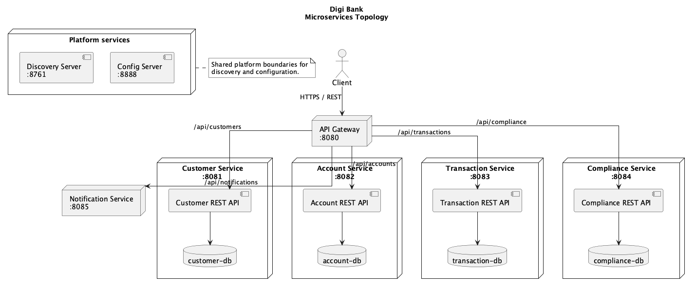

Workshop 3 presentation and evidence record
How the running banking API was observed, hardened, and revalidated through DAST.
Static analysis examines source code and configuration before execution. Dynamic analysis complements it by interacting with the application while it is running. This matters because a system can compile, pass unit tests, and still expose an API route without authentication, return excessive technical detail, accept invalid input, or handle sessions incorrectly.
This workshop therefore follows a before-and-after sequence: establish the runtime behavior, identify security weaknesses, apply targeted remediation, and replay the same scenarios to demonstrate the result.
docs/work1-devsecops-practices.adoc, sections A3.1-A3.8 and the DAST method sections.The external client does not call each business service directly. The API Gateway is the security boundary and the single entry point for the business API. Behind it, the customer, account, transaction, compliance, and notification services run as separate Compose services.

Figure 1. Runtime topology under test. The diagram shows the gateway, business services, platform services, Compose host, and persistence boundaries.
| Surface | What is tested |
|---|---|
| Gateway | Authentication, authorization, headers, cache behavior, error responses and route protection. |
| Business APIs | Customer, account, transaction and compliance operations through gateway routing. |
| Runtime behavior | Malformed requests, invalid values, missing resources, session behavior and information disclosure. |
| Delivery path | Build, Compose startup, readiness, Newman replay and ZAP scanning. |
The environment is deliberately reproducible. Maven verifies the implementation, Docker Compose starts the complete topology, smoke checks verify the endpoints, and stack validation confirms that the expected containers are running before DAST begins.
make clean make build make image-build make up make smoke make validate-stack make newman-scan make zap-scan
make status or docker compose ps, followed by successful make smoke and make validate-stack output.The baseline establishes the behavior before the gateway security boundary was introduced. The important observations were unauthenticated business routes, no gateway role distinction, incomplete response hardening, and no explicit cache policy for sensitive API responses.
The remediation uses stateless HTTP Basic authentication at the gateway because it is simple to reproduce in the workshop and preserves the existing service topology. It is not presented as the production identity architecture.
| Request condition | Expected result after remediation |
|---|---|
| No credentials or invalid credentials | 401 Unauthorized |
| Valid USER on normal banking API | Request is permitted |
| Valid USER on compliance API | 403 Forbidden |
| Valid ADMIN on compliance API | Request is permitted |
| Authenticated request | No server session or session cookie |
dast/reports/baseline/; remediation in api-gateway/SecurityConfig.java.Newman expresses the expected security behavior as repeatable assertions. The security collection is divided into authentication, authorization, functional regression, input validation, error handling, information exposure, session behavior, and remediation verification.
| Campaign | Result |
|---|---|
| Functional Newman collection | 24 requests, 74 assertions, 0 failures. |
| Security Newman collection | 12 requests, 19 assertions, 0 failures. |
| OWASP ZAP baseline | 0 High, 1 Medium, 0 Low, 1 Informational. |
The remaining Medium ZAP alert is the expected local warning that HTTP Basic credentials are sent over plain HTTP. It is acceptable only in this local educational environment and requires TLS in production. The Informational observation concerns public static-resource cacheability; authenticated API responses receive Cache-Control: no-store, private.
| Objective | Demonstrated by |
|---|---|
| A3.1 | SAST/DAST explanation and runtime validation method. |
| A3.2 | Versioned Postman functional and security collections. |
| A3.3 | Assertions for status codes, headers, response bodies and error messages. |
| A3.4 | Basic authentication, role checks and stateless-session checks. |
| A3.5 | Baseline Newman behavior and ZAP observations. |
| A3.6 | Gateway authentication, authorization, headers, cache and error hardening. |
| A3.7 | Replayed Newman and ZAP validation after remediation. |
| A3.8 | Technical report, reports, screenshots and CI artifacts. |